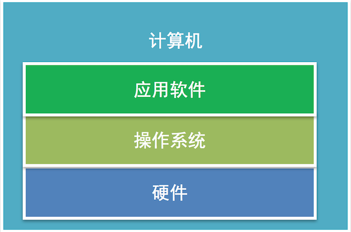
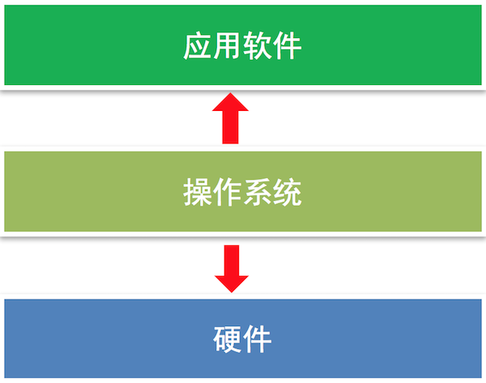
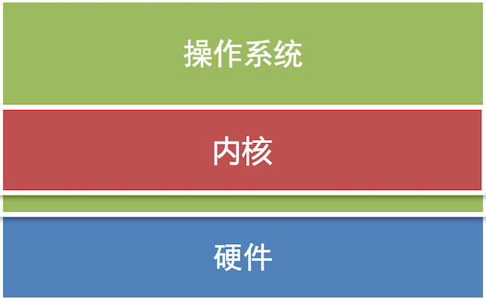
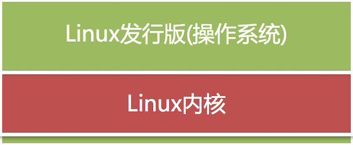

<!DOCTYPE lake>
<h1 data-lake-id="phvxg" id="phvxg"><span data-lake-id="u2f41c418" id="u2f41c418" style="color: rgb(51, 51, 51)">ubuntu系统简介</span></h1><h2 data-lake-id="JA9Bf" id="JA9Bf"><span data-lake-id="u403daac1" id="u403daac1" style="color: rgb(51, 51, 51)">操作系统</span></h2><h3 data-lake-id="qzvE8" id="qzvE8"><span data-lake-id="u668120b0" id="u668120b0" style="color: rgb(51, 51, 51)">1. 操作系统的定义</span></h3><p data-lake-id="u23093e85" id="u23093e85"><span class="lake-fontsize-12" data-lake-id="u26c300d8" id="u26c300d8" style="color: rgb(119, 119, 119)">操作系统直接运行在计算机上的</span><strong><span class="lake-fontsize-12" data-lake-id="u0ef88104" id="u0ef88104" style="color: rgb(119, 119, 119)">系统软件</span></strong><span class="lake-fontsize-12" data-lake-id="u7fd09202" id="u7fd09202" style="color: rgb(119, 119, 119)">， 它是</span><strong><span class="lake-fontsize-12" data-lake-id="ufa160ee6" id="ufa160ee6" style="color: rgb(119, 119, 119)">控制硬件和支持软件运行的计算机程序</span></strong><span class="lake-fontsize-12" data-lake-id="u3091384e" id="u3091384e" style="color: rgb(119, 119, 119)">。</span></p><p data-lake-id="u5cfe1a29" id="u5cfe1a29"></p><h3 data-lake-id="XvAPJ" id="XvAPJ"><span data-lake-id="u4f263680" id="u4f263680" style="color: rgb(51, 51, 51)">2.操作系统作用</span></h3><p data-lake-id="u09efb73b" id="u09efb73b"><span class="lake-fontsize-12" data-lake-id="u063be0e5" id="u063be0e5" style="color: rgb(119, 119, 119)">向下</span><strong><span class="lake-fontsize-12" data-lake-id="u395b1439" id="u395b1439" style="color: rgb(119, 119, 119)">控制硬件</span></strong><span class="lake-fontsize-12" data-lake-id="u088ed3e9" id="u088ed3e9" style="color: rgb(119, 119, 119)">向上</span><strong><span class="lake-fontsize-12" data-lake-id="ufa59c398" id="ufa59c398" style="color: rgb(119, 119, 119)">支持软件的运行</span></strong><span class="lake-fontsize-12" data-lake-id="u1f49e4ea" id="u1f49e4ea" style="color: rgb(119, 119, 119)">，具有承上启下的作用</span></p><p data-lake-id="u4e8220ab" id="u4e8220ab"></p><h3 data-lake-id="d4P2B" id="d4P2B"><span data-lake-id="ua5658222" id="ua5658222" style="color: rgb(51, 51, 51)">3. 常见的操作系统</span></h3><ul list="u2cdb4032"><li data-lake-id="ucf01c23b" fid="u4f03b62c" id="ucf01c23b"><span class="lake-fontsize-12" data-lake-id="u71ec56de" id="u71ec56de" style="color: rgb(51, 51, 51)">Windows</span></li><li data-lake-id="u8bb343cb" fid="u4f03b62c" id="u8bb343cb"><span class="lake-fontsize-12" data-lake-id="ue84b37f8" id="ue84b37f8" style="color: rgb(51, 51, 51)">mac OS</span></li><li data-lake-id="ucffd24a4" fid="u4f03b62c" id="ucffd24a4"><span class="lake-fontsize-12" data-lake-id="uc729e222" id="uc729e222" style="color: rgb(51, 51, 51)">Linux</span></li><li data-lake-id="u29b057de" fid="u4f03b62c" id="u29b057de"><span class="lake-fontsize-12" data-lake-id="u11bd8c65" id="u11bd8c65" style="color: rgb(51, 51, 51)">iOS</span></li><li data-lake-id="u0c4da24a" fid="u4f03b62c" id="u0c4da24a"><span class="lake-fontsize-12" data-lake-id="u75d5d412" id="u75d5d412" style="color: rgb(51, 51, 51)">Android</span></li></ul><h2 data-lake-id="iRuSB" id="iRuSB"><span data-lake-id="u21bd8583" id="u21bd8583" style="color: rgb(51, 51, 51)">linux内核和发行版本</span></h2><h3 data-lake-id="O0x8s" id="O0x8s"><span data-lake-id="u648290b3" id="u648290b3" style="color: rgb(51, 51, 51)">linux内核</span></h3><p data-lake-id="u983fee21" id="u983fee21"><span class="lake-fontsize-12" data-lake-id="ueadfdb18" id="ueadfdb18" style="color: rgb(51, 51, 51)">Linux内核是操作系统内部</span><strong><span class="lake-fontsize-12" data-lake-id="uea7eb689" id="uea7eb689" style="color: rgb(51, 51, 51)">操作和控制硬件设备的核心程序</span></strong><span class="lake-fontsize-12" data-lake-id="u606d5814" id="u606d5814" style="color: rgb(51, 51, 51)">，它是由芬兰人</span><strong><span class="lake-fontsize-12" data-lake-id="uac4f135f" id="uac4f135f" style="color: rgb(51, 51, 51)">林纳斯</span></strong><span class="lake-fontsize-12" data-lake-id="u717c6943" id="u717c6943" style="color: rgb(51, 51, 51)">开发的。</span></p><p data-lake-id="u58c26d4f" id="u58c26d4f"></p><p data-lake-id="u390932c6" id="u390932c6"><span class="lake-fontsize-12" data-lake-id="u8ede5e22" id="u8ede5e22" style="color: rgb(119, 119, 119)">说明:真正操作和控制硬件是由内核来完成的，操作系统是基于内核开发出来的。</span></p><h3 data-lake-id="Nzr86" id="Nzr86"><span data-lake-id="u5cf5f04c" id="u5cf5f04c" style="color: rgb(51, 51, 51)">发行版本</span></h3><p data-lake-id="u7a41747e" id="u7a41747e"><span class="lake-fontsize-12" data-lake-id="ua0df757f" id="ua0df757f" style="color: rgb(51, 51, 51)">是Linux内核与各种常用软件的组合产品，通俗来说就是我们常说的Linux操作系统。</span></p><p data-lake-id="u412c02e8" id="u412c02e8"><strong><span class="lake-fontsize-12" data-lake-id="u4dd04c96" id="u4dd04c96" style="color: rgb(51, 51, 51)">常用的Linux发行版:</span></strong></p><ul list="u0c65105c"><li data-lake-id="u550a19a7" fid="u3b685920" id="u550a19a7"><span class="lake-fontsize-12" data-lake-id="uc0bd42ae" id="uc0bd42ae" style="color: rgb(51, 51, 51)">Ubuntu</span></li><li data-lake-id="u38b90ff8" fid="u3b685920" id="u38b90ff8"><span class="lake-fontsize-12" data-lake-id="uc74808cf" id="uc74808cf" style="color: rgb(51, 51, 51)">CentOS</span></li><li data-lake-id="u3a5168f1" fid="u3b685920" id="u3a5168f1"><span class="lake-fontsize-12" data-lake-id="uc8fcbf14" id="uc8fcbf14" style="color: rgb(51, 51, 51)">Redhat</span></li></ul><p data-lake-id="u15b1c6a6" id="u15b1c6a6"><strong><span class="lake-fontsize-12" data-lake-id="u8db37cd6" id="u8db37cd6" style="color: rgb(51, 51, 51)">Linux发行版效果图:</span></strong></p><p data-lake-id="u2913a07f" id="u2913a07f"><span data-lake-id="u024ccd63" id="u024ccd63"><br/> </span></p>